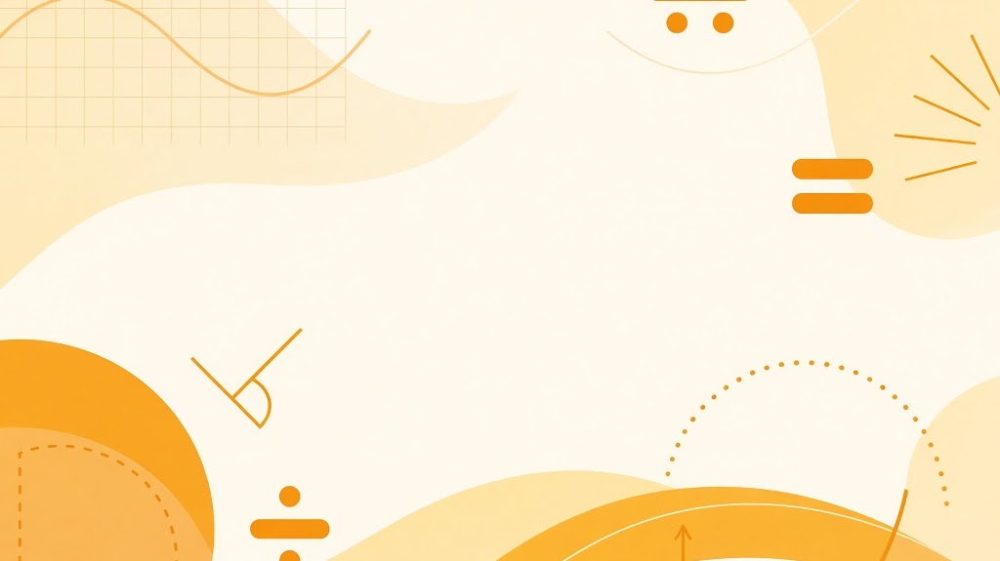

Math & Physics Hub
這是給中學生使用的學習總入口，可由此開啟數學科或物理科的工具。
A hub for secondary students. Open maths and physics tools from here.

Maths
指數、練習與數學工具
Indices, practice and maths tools
Physics
單位、公式與物理工具
Units, formulae and physics tools